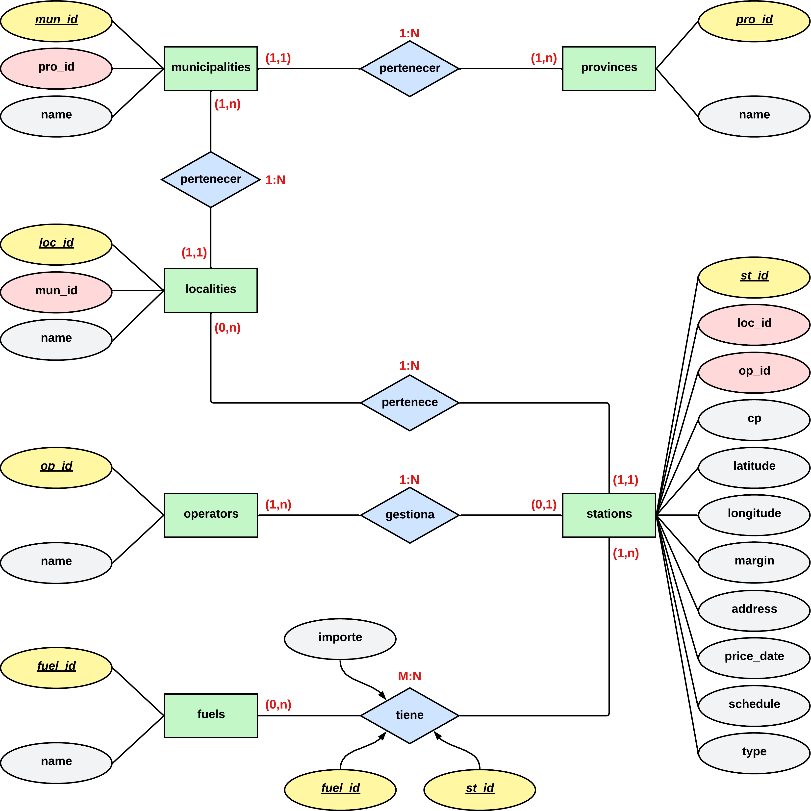

Diseño de una base de datos relacional
Introducción
La gestión de bases de datos en SQL es un componente fundamental en el ámbito de la Ingeniería Informática. En este trabajo, se aborda el diseño y la implementación de un sistema de bases de datos utilizando el enfoque del diagrama Entidad-Relación y su transformación en tablas relacionales. Además, se realizará la recuperación de información mediante archivos de texto plano, en este caso CSV. El objetivo principal será aplicar los conocimientos adquiridos en esta área mediante el diseño de una base de datos relacional, a partir de los datos de precios de combustibles en las diferentes comunidades autónomas de España y su posterior recuperación a nuestra base de datos.
El proceso se ha llevado a cabo siguiendo un orden estructurado. En primer lugar, se descargaron los datos con los que se trabajarían, para después realizar una limpieza de estos y exportarlos en un formato de texto plano, en nuestro caso CSV.
Posteriormente, se realizó el diseñó el diagrama Entidad-Relación, que permitió representar las entidades, atributos y relaciones presentes del dominio de la base de datos. Se ha puesto especial énfasis en comprender y aplicar las cardinalidades, tanto para establecer las relaciones fuertes como para identificar las relaciones débiles.
A continuación, se procedió a la transformación del diagrama Entidad-Relación en un modelo relacional mediante un script SQL. Este proceso implica la creación de tablas que reflejen adecuadamente la estructura y las restricciones de la base de datos, garantizando la integridad y consistencia de los datos.
Posteriormente, se implementó el código de JDBC para la inserción de los datos correspondientes a la base de datos. Esta fase fue crucial para poblar la base de datos y permitir la realización de consultas y análisis posteriores.
Finalmente, se llevaron a cabo diversas consultas sobre la base de datos, lo que permitió aplicar y evaluar la funcionalidad del modelo diseñado. Cada relación presente en el diagrama Entidad-Relación fue acompañada de una descripción breve de la técnica utilizada, destacando su relevancia y aplicabilidad en el contexto del proyecto.
Diseño del diagrama Entidad-Relación
En este apartado especificare los pasos seguidos para la realización del diagrama Entidad-Relación.
Captura de requisitos
Lo primero que se realizó fue un correcto análisis de los requisitos mostrados en el enunciado para diseñar una base de datos relacional para la recuperación de datos de combustibles de España.
Diseño conceptual
En segundo lugar, se capturaron todos los elementos necesarios para representar la estructura lógica de la base de datos, mostrando las entidades, sus atributos, las relaciones entre ellas y las restricciones que rigen dichas relaciones.
Entidades
Provincias ➔ provinces.
Municipios ➔ municipalities.
Localidades ➔ localities.
Operadores ➔ operators.
Combustibles ➔ fuels.
Precios ➔ prices.
Estaciones de servicio ➔ stations.
Atributos
provinces:
pro_id
name
municipalities:
mun_id
pro_id
name
localities:
loc_id
mun_id
name
operators:
op_id
name
fuels:
fuel_id
name
prices:
fuel_id
st_id
name
stations:
st_id
loc_id
op_id
fuel_id
cp
latitude
longitude
margin
address
price_date
schedule
type
Relaciones
Gestiona ➔ gestiona
Tiene ➔ tiene
Pertenece ➔ pertenece.
Relaciones entre tablas
municipalities ➔ pertenece ➔ provinces
localities ➔ pertenece ➔ municipalities
stations ➔ pertenece ➔ localities
operators ➔ gestiona ➔ stations
stations ➔ tiene ➔ fuels
fuels ➔ tiene ➔ prices
Claves primarias y foráneas
provinces:
Clave primaria: pro_id
municipalities:
Clave primaria: mun_id
Clave foránea: pro_id
localities:
Clave primaria: loc_id
Clave foránea: mun_id
operators:
Clave primaria: op_id
fuels:
Clave primaria: fuel_id
prices:
Claves primarias: fuel_id, st_id
stations:
Clave primaria: st_id
Claves foráneas: loc_id, op_id, fuel_id
Diagrama Entidad-Relación

Explicación de las relaciones
A continuación, se realizará una breve explicación de las relaciones entre las entidades descritas en el diagrama entidad-relación.
Relación "pertenece" entre "municipalities" y "provinces"
En esta relación, cada municipio pertenece exactamente a una provincia, y a cada provincia le pueden pertenecer varios municipios, lo que implica una relación 1:N.
El enlace entre estas entidades se hace a través de la clave pro_id. Se generan las claves foráneas en la entidad municipalities que se relaciona con la clave primaria de la entidad provinces.
Relación "pertenece" entre "localities" y " municipalities"
En esta relación, cada localidad pertenece exactamente a un municipio, y a cada municipio le pueden pertenecer varias localidades, lo que implica una relación 1:N.
El enlace entre estas entidades se hace a través de la clave mun_id. Se generan las claves foráneas en la entidad localities que se relaciona con la clave primaria de la entidad municipalities.
Relación "gestiona" entre "operators" y " stations"
En esta relación, cada operadora puede gestionar varias estaciones de servicio, y cada estación de servicio es dirigida por un único operador, lo que implica una relación 1:N.
El enlace entre estas entidades se hace a través de la clave op_id. Se generan las claves foráneas en la entidad stations que se relaciona con la clave primaria de la entidad operators.
Relación "tiene" entre "stations" y " fuels"
En esta relación, cada estación de servicio puede tener varios carburantes, y cada carburante puede pertenecer a varias estaciones de servicio, lo que implica una relación M:N.
Además, los carburantes tienen precios diferentes dependiendo de la estación que los suministre, los cuales estarían dentro de la relación “tiene”, evitando así tener duplicados en la tabla fuels. Para contemplar esto, se decide crear una tabla que represente la relación “tiene” a la que he llamado prices, y que contiene el atributo precio. Además, esta tabla servirá de relación entre las entidades stations y fuels.
El enlace entre estas entidades se hace a través de las claves st_id y fuel_id. Se generan las claves foráneas en la tabla prices que se relaciona con la clave primaria de la entidad fuels y con la clave primaria de la entidad stations.
Diseño lógico
En este apartado muestro la transformación del diagrama entidad-relación en un esquema lógico, en el que se representa las tablas, la estructuración de datos y el modelado de restricciones disponibles.

Lenguaje de Definición de Datos (DDL, Data Definition Languaje)
xxxxxxxxxx761CREATE SCHEMA laboratorio_EESS COLLATE utf8b4_0900_ai_ci;2
3use laboratorio_EESS;4
5create table fuels6(7 fuel_id int not null8 primary key,9 name varchar(150) not null10);11
12create table operators13(14 op_id int not null15 primary key,16 name varchar(150) not null17);18
19create table provinces20(21 name varchar(150) not null,22 pro_id int not null23 primary key24);25
26create table municipalities27(28 mun_id int not null29 primary key,30 pro_id int null,31 name varchar(150) not null,32 constraint municipalities_provinces_pro_id_fk33 foreign key (pro_id) references provinces (pro_id)34);35
36create table localities37(38 loc_id int not null39 primary key,40 mun_id int not null,41 name varchar(150) not null,42 constraint localities_municipalities_mun_id_fk43 foreign key (mun_id) references municipalities (mun_id)44);45
46create table stations47(48 st_id int not null49 primary key,50 cp varchar(5) not null,51 latitude float null,52 longitude float null,53 loc_id int null,54 margin enum ('I', 'D', 'N') default 'N' not null,55 address varchar(250) not null,56 price_date datetime null,57 schedule varchar(250) not null,58 op_id int not null,59 type enum ('T', 'M') not null,60 constraint stations_localities_loc_id_fk61 foreign key (loc_id) references localities (loc_id),62 constraint stations_operators_op_id_fk63 foreign key (op_id) references operators (op_id)64);65
66create table prices67(68 st_id int not null,69 fuel_id int not null,70 amount float null,71 primary key (st_id, fuel_id),72 constraint prices_fuels_fuel_id_fk73 foreign key (fuel_id) references fuels (fuel_id),74 constraint prices_stations_st_id_fk75 foreign key (st_id) references stations (st_id)76);
Consultas
Nombre de la empresa con más estaciones de servicio terrestres
xxxxxxxxxx71SELECT count(*) as total, name as empresa2FROM operators, stations3WHERE stations.op_id=operators.op_id and4type = 'T'5GROUP BY empresa6ORDER BY total DESC7LIMIT 1Nombre de la empresa con más estaciones de servicio marítimas
xxxxxxxxxx71SELECT count(*) as total, name as empresa2FROM operators, stations3WHERE stations.op_id=operators.op_id and4type = 'M'5GROUP BY empresa6ORDER BY total DESC7LIMIT 1Localización, nombre de empresa y margen de la estación con el precio más bajo para el combustible «Gasolina 95 E5» en la Comunidad de Madrid
xxxxxxxxxx101SELECT longitude as longitud, latitude as latitud, operators.name as empresa, margin as margen2FROM stations, operators, fuels, prices, localities3WHERE operators.op_id = stations.op_id AND4stations.loc_id = localities.loc_id AND5stations.st_id = prices.st_id AND6fuels.fuel_id = prices.fuel_id AND7localities.name = 'MADRID' AND8fuels.name = 'Gasolina 95 E5'9ORDER BY amount ASC10LIMIT 1Localización, nombre de empresa y margen de la estación con el precio más bajo para el combustible «Gasóleo A» si resido en el centro de Albacete y no quiero desplazarme más de 10 KM
xxxxxxxxxx91SELECT stations.longitude as longitud, stations.latitude as latitud, operators.name as empresa, stations.margin as margen, amount2FROM stations, operators, fuels, prices3WHERE stations.st_id = operators.op_id AND4stations.st_id = prices.st_id AND5fuels.fuel_id = prices.fuel_id AND6fuels.name = 'Gasoleo A' AND7(6371 * acos(cos(radians(38.9942400)) * cos(radians(stations.latitude)) * cos(radians(stations.longitude) - radians(-1.8564300)) + sin(radians(38.9942400)) * sin(radians(stations.latitude)))) <= 108ORDER BY (6371 * acos(cos(radians(38.9942400)) * cos(radians(stations.latitude)) * cos(radians(stations.longitude) - radians(-1.8564300)) + sin(radians(38.9942400)) * sin(radians(stations.latitude)))) ASC9LIMIT 1Provincia en la que se encuentre la estación de servicio marítima con el combustible «Gasolina 95 E5» más caro
xxxxxxxxxx111SELECT provinces.name as nombre2FROM stations, provinces, municipalities, localities, fuels, prices3WHERE stations.loc_id = localities.loc_id AND4localities.mun_id = municipalities.mun_id AND5municipalities.pro_id = provinces.pro_id AND6stations.st_id = prices.st_id AND7fuels.fuel_id = prices.fuel_id AND8fuels.name = 'Gasolina 95 E5' AND9stations.type = 'M'10ORDER BY amount DESC11LIMIT 1
Elaboración del código
El código Java proporciona una solución para importar datos desde un archivo CSV a una base de datos MySQL.
Establecimiento de Conexión y Borrado de Datos Antiguos:
El programa comienza estableciendo una conexión a una base de datos MySQL llamada "laboratorio_EESS". Luego, borra los datos existentes en las tablas (provinces, municipalities, localities, operators, fuels, stations, prices) para asegurar una inserción limpia de datos actualizados.
Lectura de Datos desde un Archivo CSV:
Se utiliza la biblioteca
opencsvpara leer un archivo CSV llamado "Precios_EESS.csv". Este archivo contiene información sobre estaciones de servicio, precios de combustibles y otros detalles relacionados.Verificación de Duplicados:
Para ciertos tipos de datos, como provincias, municipios, localidades, operadores y combustibles, antes de crear un nuevo objeto correspondiente, realizo un en la lista existente de objetos para verificar si ya existe un objeto con el mismo dato.
Por ejemplo, al leer las provincias, compruebo si ya hay una provincia en la lista con el mismo nombre. Si existe, utilizo ese objeto existente; de lo contrario, creas uno nuevo y lo agrego a la lista.
Posteriormente, cuando inserto datos en la base de datos, realizo una verificación similar utilizando consultas SQL para determinar si el elemento ya existe en la base de datos antes de insertarlo. Si ya existe, no realizas la inserción.
Este enfoque garantiza que no haya duplicados en las listas de objetos y evita la inserción de datos duplicados en la base de datos, mejorando la integridad de los datos y reduciendo el riesgo de conflictos.
Aunque incluyo un control de inserción de duplicados a la hora de la inserción, en mi caso podría haberla obviado, pues lo primero que realizo es el borrado completo de los datos de la base de datos.
Procesamiento de Datos y Creación de Listas de Objetos:
El código procesa las líneas del archivo CSV y crea objetos correspondientes a las entidades del modelo de datos, como provincias (
MySqlProvinces), municipios (MySqlMunicipalities), localidades (MySqlLocalities), operadoras (MySqlOperators), combustibles (MySqlFuels), estaciones (MySqlStations), y precios (MySqlPrices). La gestión de identificadores se realiza mediante el uso de contadores y estrategias de lotes durante la lectura y la inserción de datos.Inserción de Datos en la Base de Datos:
Los objetos creados se insertan en las respectivas tablas de la base de datos MySQL. Se utiliza un enfoque de inserción por lotes (batches) para mejorar la eficiencia de la operación, minimizando el número de operaciones de base de datos y mejorando el rendimiento.
Commit y Cierre de Conexión:
Después de completar la inserción de datos, se realiza un commit para confirmar los cambios en la base de datos. Luego, se cierra la conexión a la base de datos de manera adecuada.
Manejo de Errores:
El código maneja excepciones, registrando mensajes de error detallados en caso de problemas durante la ejecución. Esto garantiza una gestión robusta de errores y facilita la depuración.
Conclusiones
El desarrollo de la actividad siguió una secuencia lógica y estructurada, comenzando con la descarga y limpieza de datos, pasando por la creación del diagrama Entidad-Relación, la transformación a un modelo relacional mediante SQL, y culminando con la implementación de código JDBC para la inserción de datos.
El diseño del diagrama Entidad-Relación resultó fundamental, destacando la importancia de comprender y aplicar las cardinalidades para establecer relaciones sólidas. La transformación efectiva de este diagrama a un modelo relacional mediante SQL aseguró la coherencia y consistencia de la estructura de la base de datos.
La implementación del código JDBC demostró eficiencia, incorporando modularidad y manejo adecuado de excepciones. Esto facilitó la inserción de datos en la base de datos.
Las consultas realizadas sobre la base de datos permitieron evaluar la funcionalidad del modelo, resaltando la aplicabilidad práctica de las relaciones definidas en el diagrama Entidad-Relación. La experiencia práctica en el proceso de ingestión de datos me ha proporcionado de habilidades en la manipulación de datos en entornos del mundo real.
La actividad integró de manera efectiva conceptos teóricos con la aplicación práctica, consolidando la comprensión de diseño de bases de datos. Además, sentó las bases para desarrollos futuros, como la expansión del modelo, la optimización de consultas y la exploración de nuevas fuentes de datos.
Todo esto en conjunto, ha sido un ejercicio completo que abarca todas las fases de trabajo con bases de datos, proporcionando una experiencia valiosa y reforzando los conocimientos adquiridos en la asignatura de manera práctica.